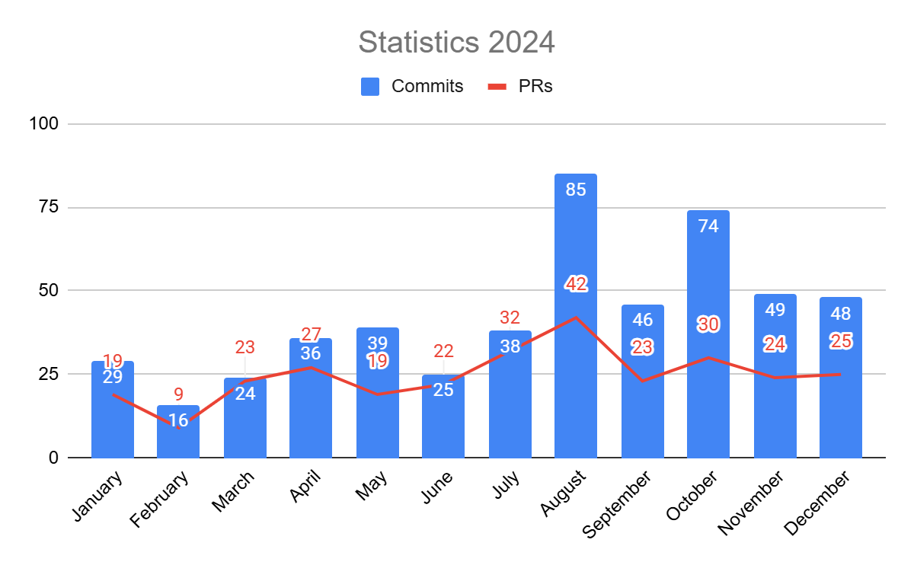

As the year draws to a close, it's time to reflect on 2024 and review its highlights and challenges.
Last year, I found myself in Vienna, Austria, contemplating 2023. At the time, this blog contained only an Introductory post and I had no concrete plans to update it regularly. Instead of writing a full blog post to share the BOINC contribution statistics, I opted for a simple update on X (formerly Twitter), Mastodon, and Threads. However, this year, there’s much more to say about BOINC, so I decided to create a more detailed report.
At the start of 2024, I didn’t have high expectations. Yet, the year managed to surprise me — though not always in the ways I had hoped.
Reflections on Key Events
The main event of the year — the BOINC Anniversary Workshop — was bittersweet for me. While I wasn’t entirely disappointed, I had hoped for more enthusiasm and engagement. I’ve shared more details in a dedicated blog post, but to summarize: I enjoyed reconnecting with colleagues I’ve worked with over the past five years, and we generated some promising ideas for BOINC’s future. Still, the level of activity fell short of my expectations.
Another significant event, the conference in Bielefeld, amplified my concerns. It highlighted a growing need for fundamental changes in BOINC to ensure it continues to meet scientists’ evolving needs. As Adam Jensen, the protagonist of 'Deus Ex: Mankind Divided', aptly said, “The world is different now; the old rules no longer apply.” BOINC has been a unique and valuable resource for scientists over the past 20 years, but it must adapt to stay relevant.
Steps Toward Change
This year saw the introduction of a new concept: "Sporadic applications". These applications sit idle on users’ devices, ready to execute AI and ML tasks on command. While no active project currently utilizes this model, I’m confident we’ll see it adopted in the near future.
Another exciting development is the upcoming inclusion of "BUDA (BOINC Universal Docker Applications)" in the next release. This feature will significantly simplify application creation for scientists by leveraging Docker to handle platform-specific challenges. While Android remains an exception due to its increasingly restrictive nature, BUDA represents a critical step toward greater accessibility and efficiency.
Challenges and Delays
Despite the progress, the year wasn’t without its setbacks. I initially planned to release two more versions of the BOINC client in 2024, but these have been delayed to Q2 2025. The primary obstacle has been the expired signing key for the Windows installer. The process of acquiring a new key has become much more complex, as offline keys (in PFX format) are no longer permitted. This situation also forced an unplanned migration from the old InstallShield installer to a new custom solution. While this change was on my long-term roadmap, I hadn’t anticipated addressing it under such time pressure. Once resolved, the release process will closely resemble the streamlined Linux vanilla packaging process. My ultimate goal is to make releases as simple as a single button click.
Looking Ahead
2024 was a challenging yet eventful year, filled with progress and lessons. Looking forward, we have ambitious plans to enhance BOINC, making it more advanced and user-friendly. Stay tuned for updates as we bring these ideas to life.
And now, it’s time to share some statistics from the past year.
| Statistic | Count |
|---|---|
| New issues | 153 |
| Issues closed | 217 |
| Total open issues | 445 |
| New PRs | 332 |
| PRs closed | 330 |
